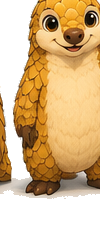

La diferencia entre diseño 2D y 3D no es solo agregar una dimensión más — es aprender a pensar de forma completamente diferente. En 2D dibujas sobre un plano. En 3D construyes objetos que existen en el espacio.
Conceptos fundamentales del modelado 3D
Malla poligonal (Mesh)
La mayoría de los modelos 3D son mallas — colecciones de puntos (vértices), líneas (aristas) y superficies (caras) que juntas forman una forma. Imagina que conectas puntos en el espacio para crear una estructura.
¿Por qué importa?
Entender cómo están conectados los vértices es crucial. Una malla deficiente no se puede imprimir, renderizar correctamente, o animar bien.
Coordenadas X, Y, Z
En 2D tienes ancho (X) y alto (Y). En 3D agregas profundidad (Z). Todos los programas de modelado 3D usan este sistema de coordenadas para ubicar puntos en el espacio.
- Eje X: izquierda-derecha
- Eje Y: arriba-abajo
- Eje Z: adelante-atrás
Primitivos geométricos
Casi todo comienza con formas simples: cubo, esfera, cilindro, cono, plano. Los programas de modelado te permiten crear estas formas en segundos — lo difícil es modificarlas para crear lo que quieres.
Tipos de modelado 3D
Modelado poligonal (Poly modeling)
Modificas vértices, aristas y caras directamente. Es como esculpir digitalmente — tomas un cubo y lo deformas hasta que se parece a lo que quieres. Es la técnica más común para objetos duros (herramientas, piezas mecánicas).
Esculpido digital (Sculpting)
En lugar de mover puntos individuales, usas pinceles virtuales para "esculpir" la forma. Se siente más natural si eres artista, pero requiere más poder de computadora. Excelente para caracteres, estatuas, figuras orgánicas.
Modelado paramétrico (CAD)
Defines medidas y relaciones exactas entre componentes. Si cambias una dimensión, todo se recalcula automáticamente. Es lo que usan ingenieros para piezas mecánicas precisas. Menos artístico, más matemático.
Para impresión 3D
Poligonal funciona bien para la mayoría. CAD es mejor si necesitas precisión milimétrica. Sculpting es hermoso pero necesita simplificación para imprimir.
Herramientas recomendadas para principiantes
| Herramienta | Tipo | Ideal para | Costo |
|---|---|---|---|
| Tinkercad | Poligonal | Principiantes absolutos, piezas simples | Gratis |
| FreeCAD | CAD | Piezas técnicas, ingeniería | Gratis |
| Fusion 360 | CAD + Poligonal | Profesionales, diseño industrial | Gratis (estudiantes) |
| Blender | Poligonal + Sculpting | Arte, caracteres, renderizado | Gratis |
| Autodesk Inventor | CAD | Ingeniería mecánica | $$$$ |
¿Cuál elegir como principiante?
- Si es tu primer proyecto: Tinkercad. Es web, intuitivo, y puedes ir a impresión en minutos.
- Si quieres algo más potente: Fusion 360 (gratis para estudiantes). Es la opción más versátil — CAD + poligonal.
- Si eres artista o te interesa lo visual: Blender. Curva de aprendizaje más pronunciada, pero ilimitado.
- Si necesitas precisión mecánica: FreeCAD. Libre, especialmente para ingenierías.
Primeros pasos: cómo empezar
1. Aprende a navegar
Todos los programas tienen la misma idea: rotar, zoom y pan (movimiento) de la vista 3D. Dedica 10 minutos solo a estas operaciones — es 50% del trabajo.
2. Crea una forma simple
Coloca un cubo, una esfera o un cilindro. Luego modifícalo: mueve puntos, escala, rota. Familiarízate con los controles básicos.
3. Entiende la exportación
Para imprimir, necesitas exportar tu modelo como STL (o STEP para CAD). Aprende dónde está ese botón en tu herramienta.
4. Valida antes de imprimir
Siempre comprueba que tu modelo es "imprimible" — que no tiene agujeros, que la malla está cerrada. Hay verificadores gratis en línea (como netfabb).
5. Imprime algo pequeño primero
No empieces con un proyecto de 20cm. Imprime algo de 5x5x5cm para ver cómo sale en la vida real.
Errores comunes que debes evitar
- No validar la malla: una malla con agujeros no se puede imprimir. Verifica siempre.
- Paredes muy finas: piezas con paredes menores a 1mm se rompen. Mantén al menos 1.5-2mm.
- Detalles demasiado pequeños: la impresora tiene límites. 0.4mm es el mínimo realista en FDM.
- Ignorar la orientación: cómo orientas tu modelo en la impresora importa mucho — cambia resistencia y acabado.
- No hacer pruebas antes: nunca prints algo grande sin probar versiones pequeñas primero.
Recursos de aprendizaje
YouTube tiene miles de tutoriales gratis. Busca "Tinkercad tutorial", "Fusion 360 for beginners", etc. Los primeros 5-10 tutoriales te darán 90% de lo que necesitas. Luego aprende haciendo proyectos reales.

¿Tienes un diseño listo o necesitas ayuda?
En 3DSnapTech imprimimos tus creaciones. Si el archivo necesita ajustes, te ayudamos.